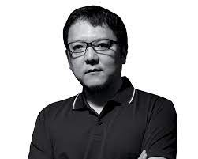
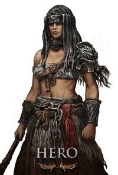
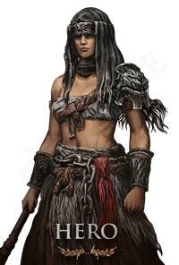

Creator of Elden Ring-Hidetaka Miyazaki
The different classes
Elden Ring has different classes like: Hero, Bandit, Astrologer, Warrior, Prisoner, Confessor, Wretch, Vagabond, Prophet og Samurai
 

Samurai and Hero is two of the most used classes for beginners
In total there is 238 bosses in Elden Ring
Of the 238 uniqe bosses there are 30 achievement bosses
The main point in Elden Ring is to become the elden lord
When finnishing the game you can get three different endings which have three uniqe different video clips
The three different endings are the normal one becoming the Elden Lord, Lord of Frenzied Flame and Age of Stars